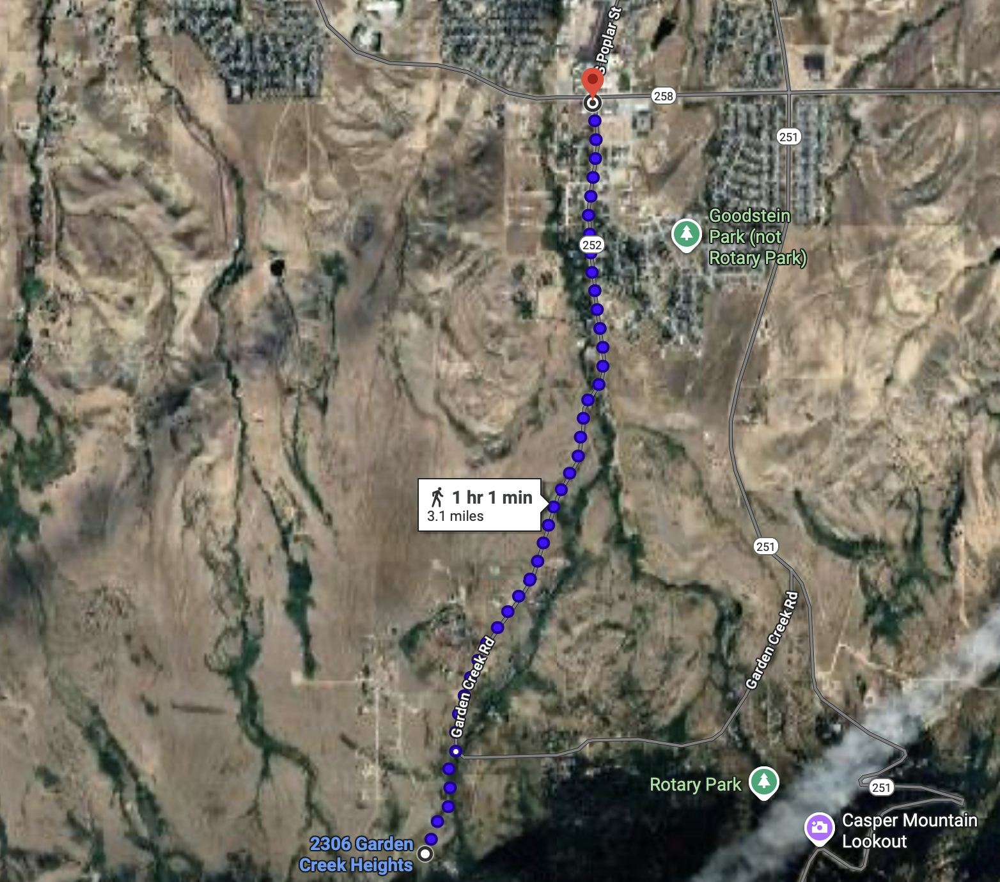
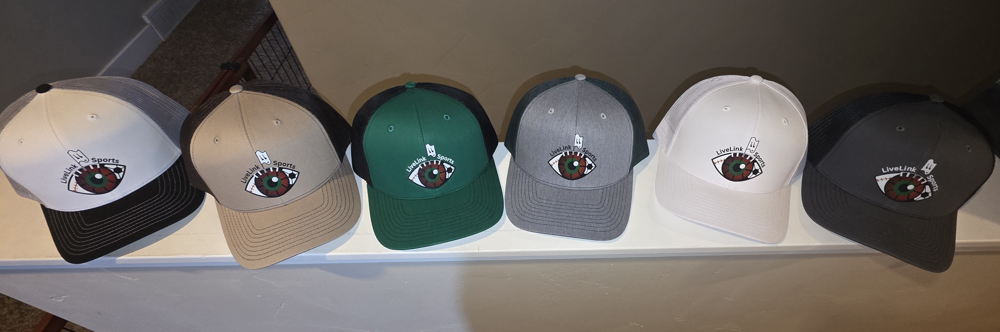

Join us for the LiveLink Sports First Annual 5K Run — a community-focused race bringing together athletes, fans, and families for an unforgettable day of fitness and fun. Whether you’re racing for a personal best or walking with friends, this event is for everyone.
The map below shows the official LiveLink Sports 5K route following WY-252 S from start to finish.
Tap the map to view the interactive route in Google Maps.
Registration for the LiveLink Sports First Annual 5K Run is now open. Secure your spot using Venmo or email.
Participants who choose the 5K Run + Hat option will receive an official LiveLink Sports hat. Only 15 hats are available, and colors vary.
Hat style shown is representative. Colors may vary.